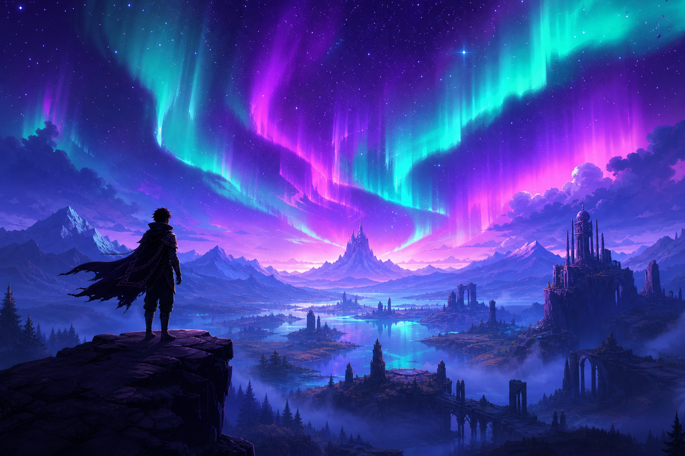
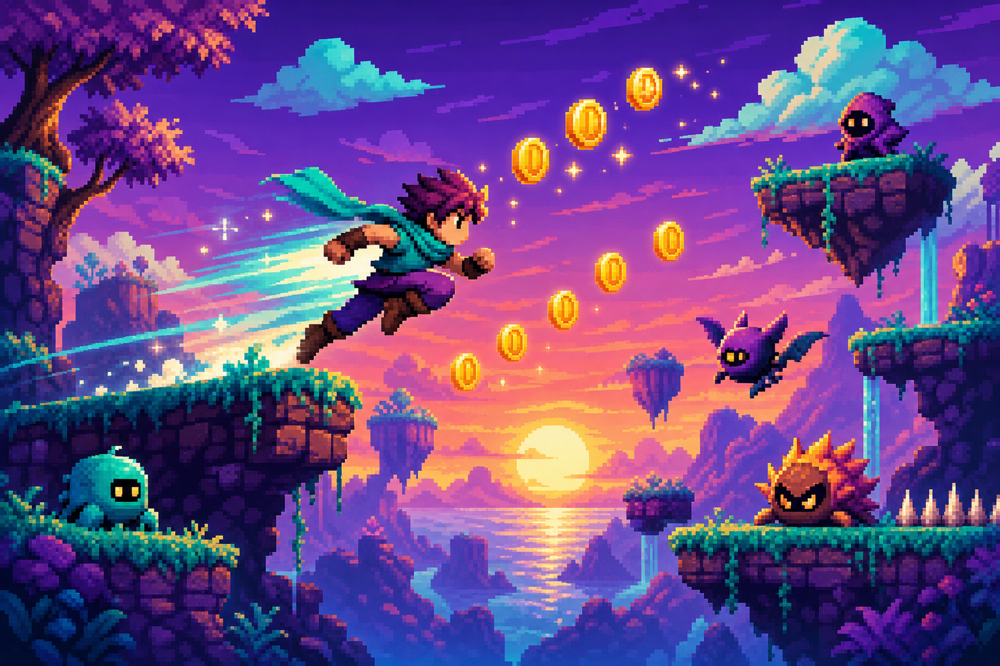
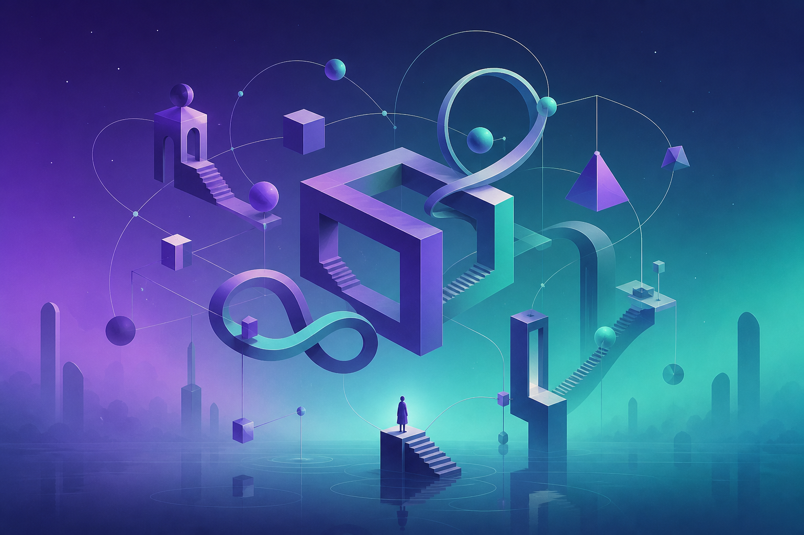

Aurora Drift
Uma jornada em mundo aberto sob auroras infinitas, onde cada decisão molda o destino de uma civilização esquecida.
RPG Saiba maisHorizon Studio é um estúdio independente apaixonado por criar experiências interativas memoráveis. Combinamos arte autoral, narrativa envolvente e mecânicas criativas para construir universos que ficam na memória dos jogadores.

Uma jornada em mundo aberto sob auroras infinitas, onde cada decisão molda o destino de uma civilização esquecida.
RPG Saiba mais
Plataforma frenético em pixel art com fases geradas proceduralmente e trilha sonora chiptune original.
Plataforma Saiba mais
Quebra-cabeças minimalistas que desafiam a percepção do tempo e do espaço em uma narrativa silenciosa e poética.
Puzzle Saiba maisFundada em 2019 por um pequeno grupo de artistas e programadores apaixonados por jogos, a Horizon Studio nasceu com a missão de provar que histórias profundas e mecânicas inovadoras podem surgir de qualquer canto do mundo, sem grandes orçamentos.
Hoje nossa equipe é formada por designers, roteiristas, compositores e desenvolvedores espalhados pelo Brasil, unidos pelo desejo comum de criar experiências que emocionem, desafiem e inspirem cada jogador que cruzar nossos horizontes.
Quer falar com a equipe, propor uma parceria ou simplesmente compartilhar suas impressões? Escreva para contato@horizonstudio.fake.